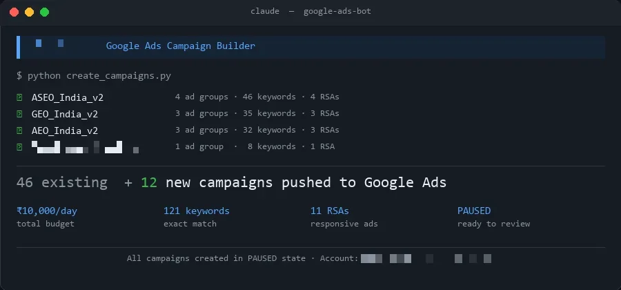
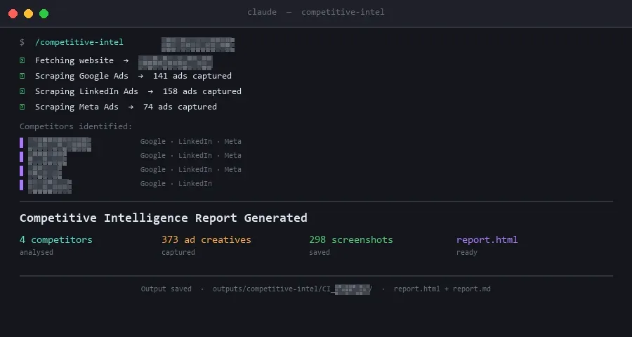
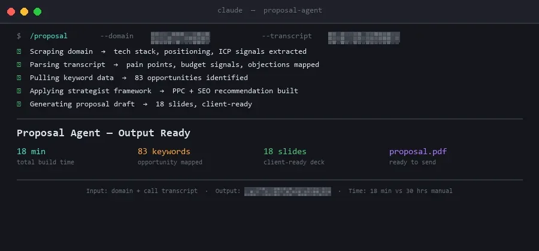
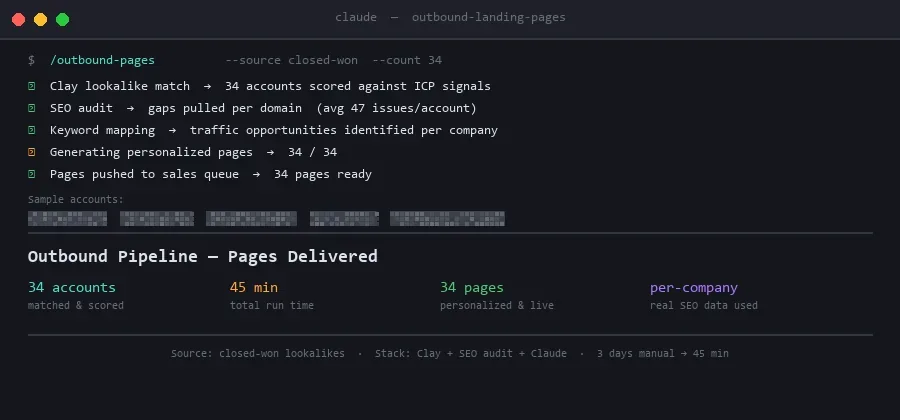

The Problem
The most expensive work isn't the hard work, it's the predictable work that runs every week.
Four tasks kept recurring: daily reporting, competitor ad monitoring, proposal builds, and personalized outbound. Each one followed the exact same steps every time, same inputs, same output format, same person doing it. Nothing was hard. Everything was slow.
The question was which ones had enough structure to encode once and run without intervention. Four did.
Fixed inputs. Fixed output format. Fixed cadence. That's the definition of a system waiting to be built.
The pattern
Collect. Format. Deliver. Repeat next week.
Competitive intel: open the Ad Library, scroll, screenshot, copy into a doc, summarize. Proposals: pull research, apply a template, adjust tone per client. Reporting: check the dashboard, note the drops, send an update. Each task had structure. The structure never changed. The only variable was which human did it that week, and how long it took them.
Daily reporting
Ad library scrapes
Proposals rebuilt each time
Generic outbound
20-hour intel cycles
Senior time on formatting
Four builds
Each agent has one job. One input. One output. No one watching.
These aren't general-purpose assistants. Each one was scoped to a single recurring task, fixed inputs, fixed output format, triggered on a schedule or an event. Here's what was built and what it replaced.
Terminal output — Claude Code pushing campaigns via API
google-ads-bot

Daily reports sent
Every day
→
0
12 campaigns pushed in
~Half day
→
20 min
Decision speed
Next morning
→
Real-time
Terminal output — Claude Code running competitive intel scrape
competitive-intel

Time to full report
20 hrs
→
<5 min
Human input needed
Manual weekly
→
None
Intel lag time
Days behind
→
Same day
Terminal output — Claude Code running proposal agent
proposal-agent

Time per proposal
30 hrs
→
<20 min
Senior time required
Every proposal
→
Once
Inputs needed
Domain + call transcript
Terminal output — Claude Code running outbound pipeline
outbound-landing-pages

Research + build time
3 days
→
30 min
Pages generated
—
→
30 in 45 min
Personalization depth
Generic
→
Per-company
Total output
Four agents. All four loops gone.
Intel report time
<5 min
down from 20 hours
Proposal time
<20 min
down from 30 hours
Campaigns pushed
12
in 20 minutes, not half a day
Outbound pages built
30
per-company, in 45 minutes
Manual reporting loops
0
completely eliminated
Why it worked
Not every recurring task is automatable. These four had three things in common.
01. Defined inputs
Each task started with the same data every time. A domain, a competitor list, a campaign ID, a meeting transcript. No ambiguity at the entry point. The agent always knew what to pull and where to start, it didn't need to decide.
02. Fixed output format
The deliverable never changed shape. A proposal doc. An intel PDF. A campaign config. A per-company landing page. When the output template is fixed, the agent fills it correctly every time. Judgment calls don't enter the picture.
03. Predictable trigger
All four ran on a schedule or a drop event. No human had to decide when to start them. That's the filter. Any task that requires someone to decide "now is the right moment to run this" isn't ready to automate.
04. The knowledge was capturable
For the proposal agent, this was the hardest part. Before writing a prompt, the approach was to interview the strategists who wrote the best proposals, not to copy their templates, but to encode their judgment. The agent inherited the thinking. The templates came after.
The real cost isn't the hard work.
It's the predictable work that runs
on a human every single week.
Most marketing bottlenecks aren't complexity problems. They're repeatability problems. The same steps, the same inputs, the same output, done manually because no one stopped to encode them. These four builds freed up roughly 50+ hours a week of recurring execution time.
If a task runs the same way every time and you can describe its inputs and output format, it's a system. Build it once, run it indefinitely.